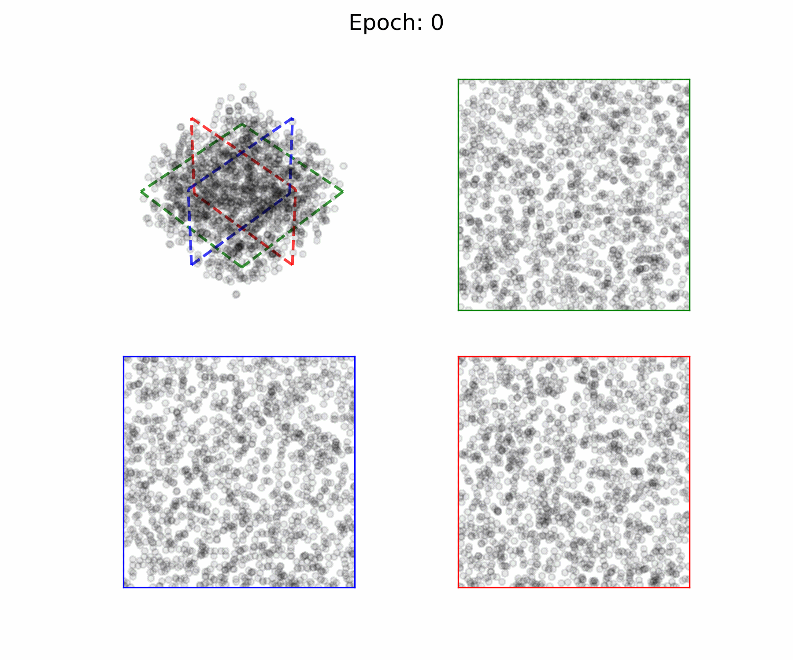
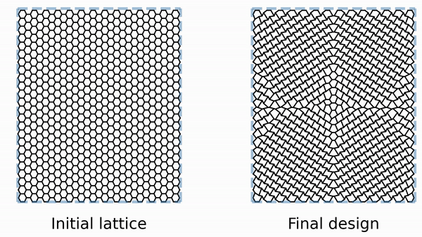
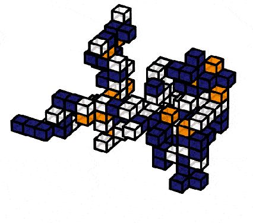
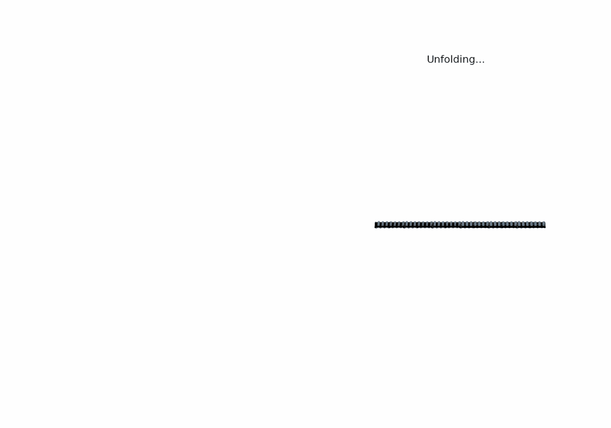

Research

Causal pieces of a spiking neural network, evaluated for the data points of the Yin-Yang dataset. Every coloured region is a causal piece.
Theory of spiking neural networks
What can spiking neural networks compute, how reliably can they learn, and how do their capabilities compare with conventional neural networks? I develop mathematical tools for analysing their expressivity, approximation properties, and generalisation behaviour.
Causal pieces
The input space of a spiking neural network can be decomposed into causal pieces, regions in which the same subnetwork determines the output spike times. The number of causal pieces a nLIF neural network possesses can be used to derive lower bounds on approximation errors and guide network initialisation.
Generalisation bounds
For affine spiking neural networks, continuity with respect to parameters enables the derivation of generalisation bounds using classical covering numbers. Interestingly, network depth has comparatively little adverse effect on the generalisation bound.
Transference principle
The above bound are valid for neurons that spike at most once. But what about neurons that spike multiple times? In recent work, we proved that approximation results can be transferred between the two settings, showing that the two paradigms have equivalent approximation capabilities.
Neuro-inspired learning & computing
Biological neural systems compute with sparse, event-based communication and highly local interactions. I study how such principles can inspire new learning algorithms and efficient computing architectures.
Neural sampling
Spiking neural networks can represent and sample from probability distributions using their temporal dynamics. I developed self-sufficient sampling networks in which deterministic neural circuits generate the effective stochasticity required for probabilistic inference.
Biologically plausible learning
I have introduced a neuronal least action principle that describes how cortical circuits could approximate gradient-based learning. The derived continuous dynamics could be realised by dendritic computing, inhibitory microcircuits, and local plasticity.
Efficient computing substrates
Neuromorphic hardware offers a promising route towards resource-efficient AI. My work includes evaluating spiking neural network with purely temporal coding for onboard AI applications.

Self-sufficient neural sampling with spiking neural networks. Every pixel represents the averaged spike activity of one neuron. The activity of the hidden neurons is used as background noise for other neurons in the ensemble.

From neural models to emerging hardware
I am also interested in how to map neural algorithms onto emerging computing substrates. This includes studying how analogue noise, e.g., in memristive accelerators, affects the performance of onboard applications such as asteroid geodesy (training a neural network to recover the mass density of a celestial body from orbital data).
Read more →{kind=link}

Gradient-based inverse design of graph-structured lattice materials.
Learning on graphs & structured systems
Many systems can be modelled as a relational graph, for example social networks, industrial systems, and physical structures (e.g. lattice materials). I develop machine learning methods that explicitly exploit this structure, combining ideas from graph representation learning, neuroscience, and differentiable intelligence.
Spike-based graph learning
How can we represent relational graph data using spikes? I introduced spike-based embedding methods for multi-relational graphs and worked on spiking relational graph neural networks.
Knowledge graphs & cybersecurity
Knowledge graphs provide a natural way to model industrial automation systems. By rephrasing anomaly detection as a link prediction task on this knowledge graph representation, I developed an interpretable method for detecting cyber-attacks.
Differentiable inverse design
By combining message passing, automatic differentiation, GNNExplainer, and surrogate-gradients, I derived a method for inversely designing lattice structures with desired mechanical properties.
Self-organising & reconfigurable systems
How can physical systems autonomously organise themselves using only local interactions? I explore learning and optimisation methods for modular and continuously reconfigurable structures, with a particular interest in future space infrastructure.
{kind=link}

Self-configuring cube ensembles
Modular robots composed of pivoting cubes can reconfigure into desired structures autonomously. Using reinforcement learning and geometric deep learning, we investigate how individual modules can coordinate using predominantly local information.
Read more →{kind=link}

Totimorphic structures
Totimorphic lattices can continuously alter their geometry without deforming its beam elements. I investigate optimisation methods for programming such structures for functional tasks, including adaptive telescope mirrors, metamaterials, and other reconfigurable space structures.
Read more →Explainable quantum machine learning
Photonic quantum chips represent an alternative solution for machine learning in low-power environments such as onboard a spacecraft. Thus, I recently started a new research direction on explainable quantum machine learning for space applications.